Browser Output and Reflection on Lesson 5
Reflection: In this lesson, I learned that CSS selectors are used to target specific HTML elements to apply styles. There are different types of selectors, such as class, element, ID, universal, group, and attribute selectors, each with its own purpose. I discovered that class selectors are used for multiple elements, while ID selectors are meant for one unique element on a page. I also learned that using the correct selector helps make CSS code more organized and efficient. Overall, this lesson taught me how to control the design of web pages more precisely by choosing the right type of selector for each situation.
Here are some examples using different css selectors!
Element Selector:
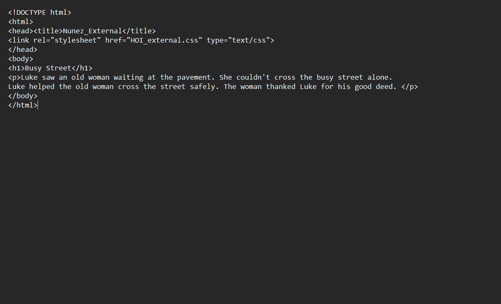
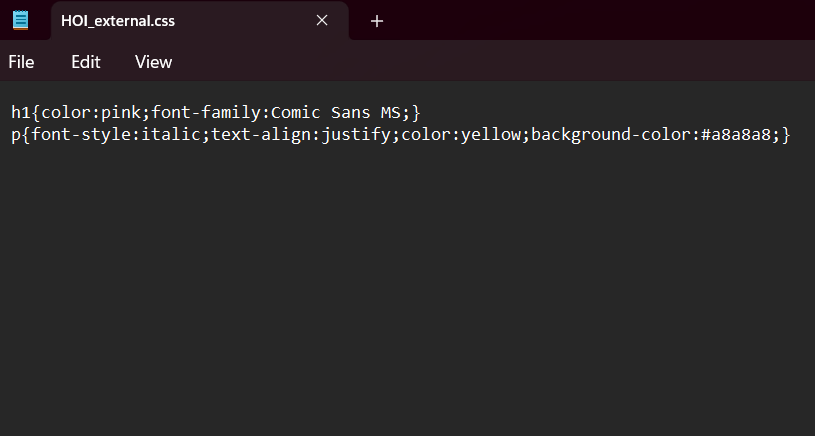
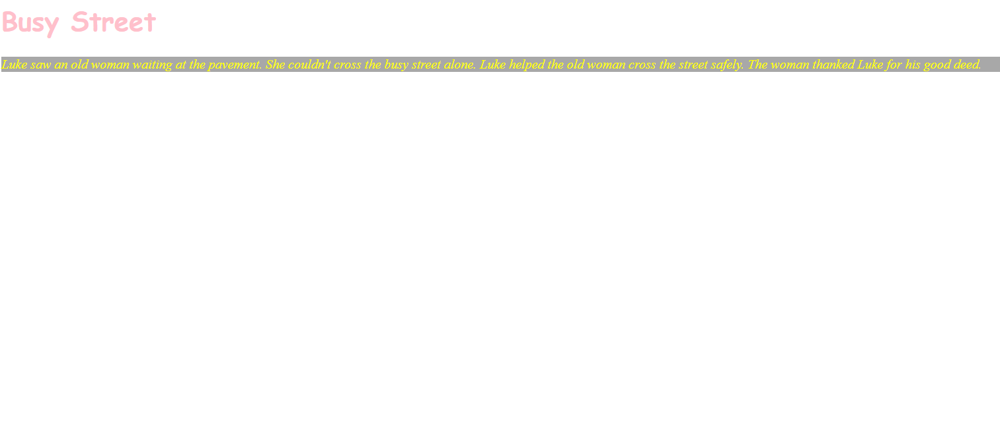
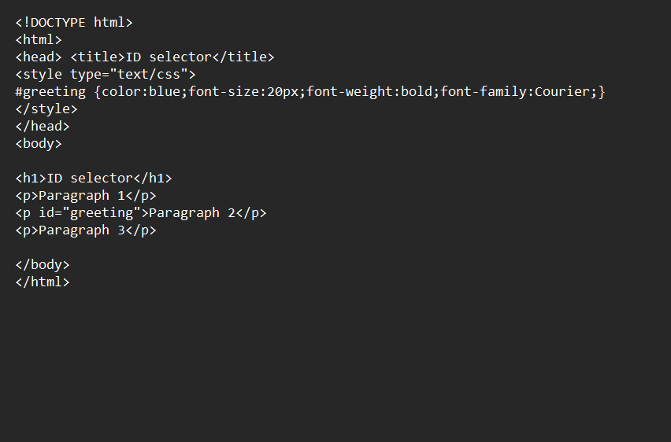
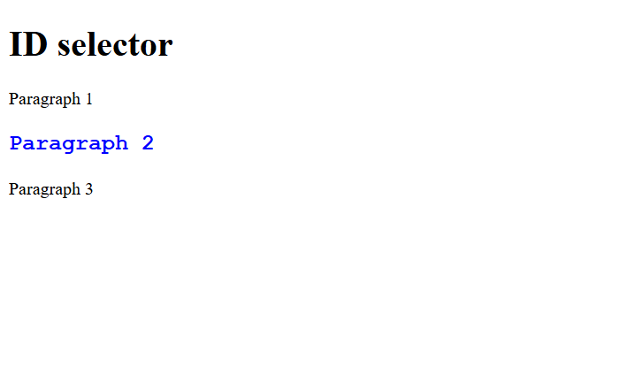
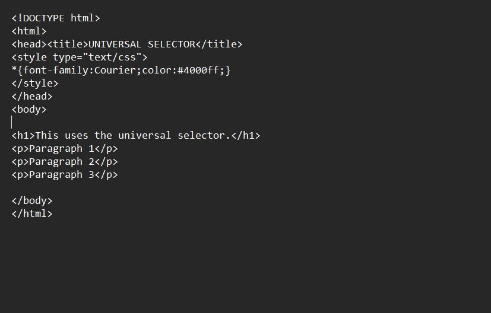
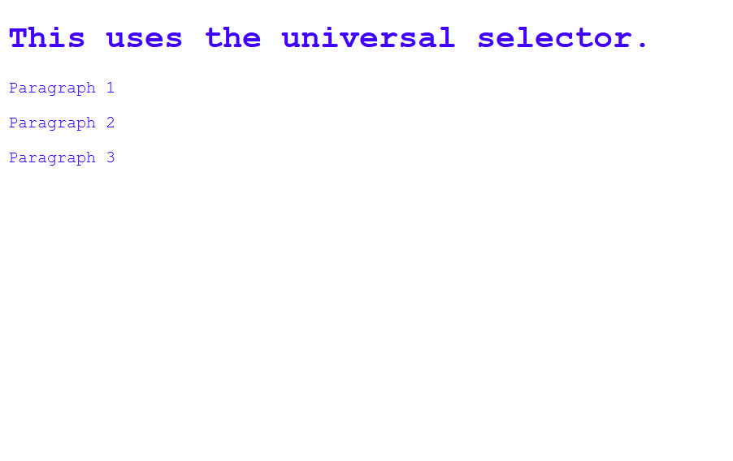
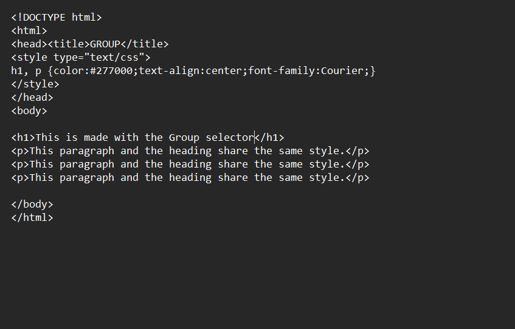
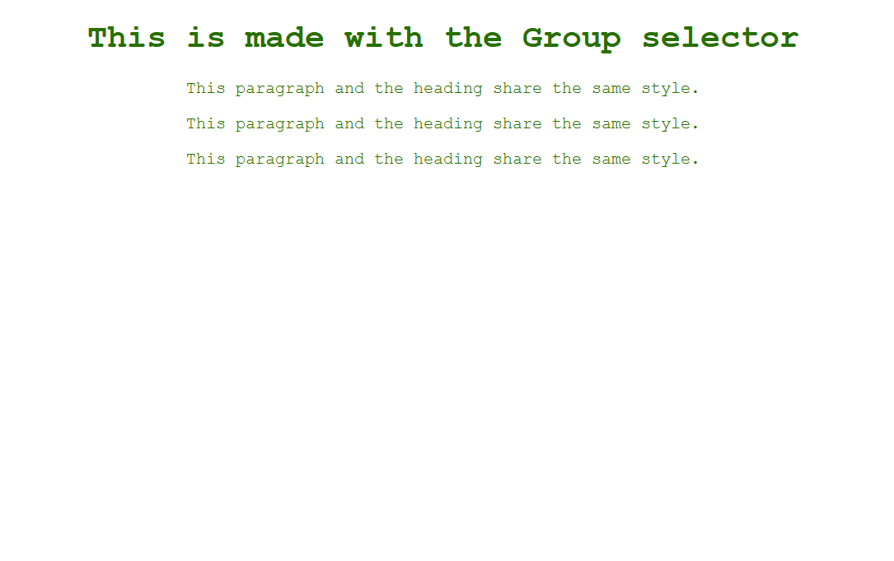
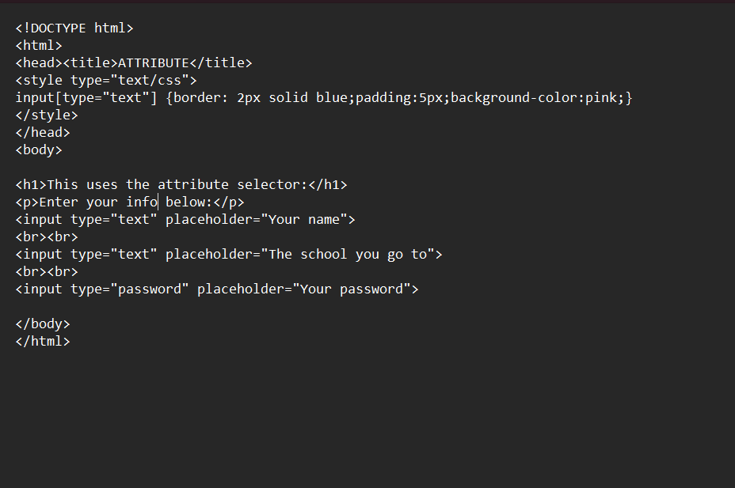
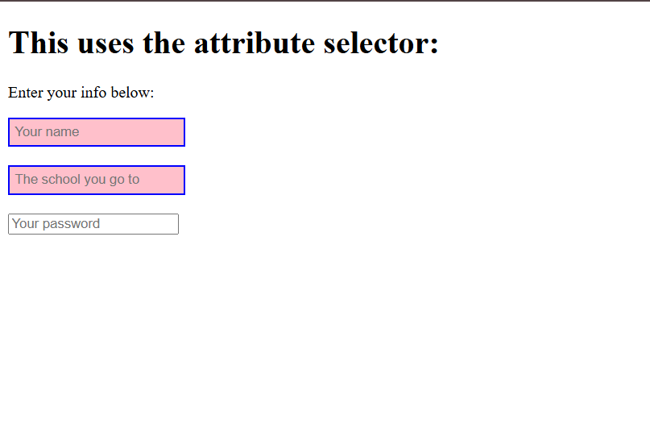
< back to TLE-ICT home page